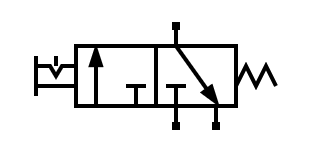
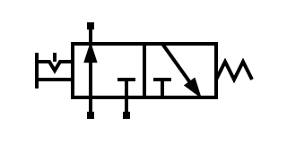
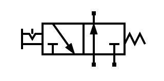
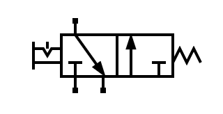
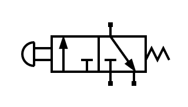
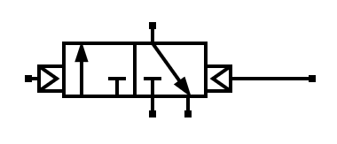

4. 3/2 valve¶
A 3/2 valve has 3 air paths and 2 positions:
{kind=link}

3/2 valve normally closed, at rest.¶
{kind=link}

3/2 valve normally closed, actuated.¶
The two ports below are usually connected to the pressure source on the left and the exhaust on the right. The upper passage is used to bring air into a single-acting cylinder or to remove that air during rest.
This valve allows the cylinder to be activated and brought to rest with a single control element, as can be seen in the following simulation:
- When actuating the 3/2 valve, the air passes directly from the pressure source to the pneumatic cylinder, so the rod comes completely out. This behavior is the same as that of a 2/2 valve.
- By bringing the 3/2 valve to rest, the air introduced into the cylinder has an escape route through the valve, so the cylinder returns to its rest position. This is equivalent to opening another 2/2 valve to allow air to escape.
Normally open valve¶
Sometimes it is necessary for the valve to allow air to pass when it is at rest and to cut off the air flow when it is activated. The valve with this operation is called Normally Open and has the two exchanged states in its symbol:
{kind=link}

3/2 valve normally open, at rest.¶
{kind=link}

3/2 valve normally open, actuated.¶
Drives¶
The valves seen so far have a manual actuation with interlock. This means that the valve is moved by hand and remains in that position until we operate it manually again.
There are other types of actuations such as push-button actuation with spring return. This actuation moves the valve while it is being pressed, but returns to its rest position when you stop pressing:
{kind=link}

3/2 valve activated by push button and spring return.¶
In spring return roller actuation, a roller moves to actuate the valve when it collides with a piston or a moving object:

3/2 valve actuated by roller and spring return.¶
In pneumatic pilot operation the way to operate the valve is by providing pressurized air at each of its right or left ends:
{kind=link}

3/2 valve pneumatically actuated.¶
Exercises¶
What is a 3/2 pneumatic valve and what parts does it consist of?
Explain in your words how a 3/2 valve works in each of its two positions.
Draw a normally open 3/2 valve and a normally closed 3/2 valve, both at rest.
Draw in the following simulator a single-acting cylinder operated by a 3/2 manual valve with interlock, normally open.
To draw the normally open valve, draw a normally closed valve (default) and then choose
Edit... Flipfrom the menu and clicking on the valve will change its operation.Briefly explain each of the 4 actuations of a pneumatic valve that have been seen above.
Draw in the following simulator a single-acting cylinder operated by a 3/2 valve with roller drive.
Place the roller at the beginning of the cylinder stroke and simulate the circuit to see how it behaves.
Explica el comportamiento del circuito anterior reordenando las siguientes frases en el orden correcto al copiarlas en tu cuaderno.
- Cuando el vástago del cilindro sale hacia fuera, el rodillo y la válvula dejan de estar accionados.
- Cuando el vástago del cilindro entra, acciona de nuevo el rodillo de la válvula y el ciclo vuelve a comenzar.
- Al recibir aire, el vástago del cilindro sale hacia fuera.
- Al comienzo el vástago se encuentra dentro del cilindro, accionando el rodillo de la válvula.
- Al no accionar el rodillo, la válvula deja de enviar aire al cilindro y conecta al escape, haciendo que el vástago vuelva a entrar.
- Al accionar el rodillo, la válvula pasa a estar accionada y deja pasar aire hacia el cilindro.